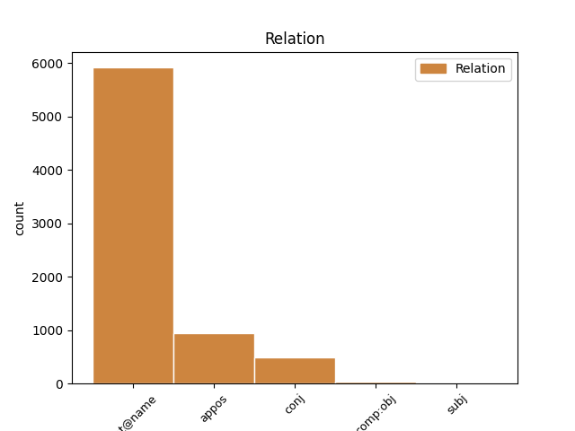
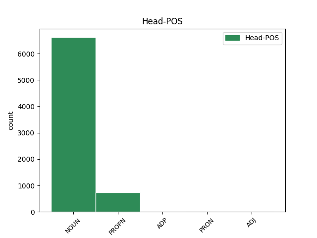
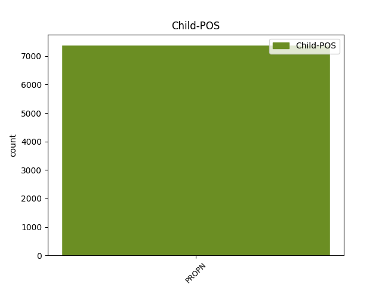

Distribution of features within this leaf



Agreement Rules sorted by frequency.
- When the dependent token is the flat multiword expression(flat@name) of the head token, and the dependent token is PROPN.
1 Vizepräsidentin Präsidentin NOUN NN Gender=Fem|Number=Sing|Person=3 0 _ _ _
2 Judy Judy PROPN NE Gender=Fem|Number=Sing|Person=3 1 flat@name _ _
3 Qua _ _ _ _ 0 _ _ _
4 erklärte _ _ _ _ 0 _ _ _
5 , _ _ _ _ 0 _ _ _
6 der _ _ _ _ 0 _ _ _
7 Gewinn _ _ _ _ 0 _ _ _
8 des _ _ _ _ 0 _ _ _
9 Unternehmens _ _ _ _ 0 _ _ _
10 werde _ _ _ _ 0 _ _ _
11 durch _ _ _ _ 0 _ _ _
12 die _ _ _ _ 0 _ _ _
13 Reduzierung _ _ _ _ 0 _ _ _
14 nicht _ _ _ _ 0 _ _ _
15 negativ _ _ _ _ 0 _ _ _
16 beeinflusst _ _ _ _ 0 _ _ _
17 . _ _ _ _ 0 _ _ _
1 Mit _ _ _ _ 0 _ _ _
2 dieser _ _ _ _ 0 _ _ _
3 letzten _ _ _ _ 0 _ _ _
4 Variante _ _ _ _ 0 _ _ _
5 plant _ _ _ _ 0 _ _ _
6 das _ _ _ _ 0 _ _ _
7 Redmonder _ _ _ _ 0 _ _ _
8 Unternehmen _ _ _ _ 0 _ _ _
9 wohl _ _ _ _ 0 _ _ _
10 bereits _ _ _ _ 0 _ _ _
11 die _ _ _ _ 0 _ _ _
12 Unterstützung _ _ _ _ 0 _ _ _
13 der _ _ _ _ 0 _ _ _
14 für _ _ _ _ 0 _ _ _
15 Ende _ _ _ _ 0 _ _ _
16 nächsten _ _ _ _ 0 _ _ _
17 Jahres _ _ _ _ 0 _ _ _
18 angekündigten _ _ _ _ 0 _ _ _
19 eigenen _ _ _ _ 0 _ _ _
20 Spielkonsole Konsole NOUN NN Gender=Fem|Number=Sing|Person=3 0 _ _ _
21 , _ _ _ _ 0 _ _ _
22 der _ _ _ _ 0 _ _ _
23 X-Box X-Box PROPN NE Gender=Fem|Number=Sing|Person=3 20 appos _ _
24 . _ _ _ _ 0 _ _ _
1 Dies _ _ _ _ 0 _ _ _
2 ist _ _ _ _ 0 _ _ _
3 John John PROPN NE Gender=Masc|Number=Sing|Person=3 0 _ _ _
4 Palmer _ _ _ _ 0 _ _ _
5 und _ _ _ _ 0 _ _ _
6 Rolf Rolf PROPN NE Gender=Masc|Number=Sing|Person=3 3 conj _ _
7 Hansen _ _ _ _ 0 _ _ _
8 , _ _ _ _ 0 _ _ _
9 den _ _ _ _ 0 _ _ _
10 beiden _ _ _ _ 0 _ _ _
11 erst _ _ _ _ 0 _ _ _
12 im _ _ _ _ 0 _ _ _
13 Dezember _ _ _ _ 0 _ _ _
14 neu _ _ _ _ 0 _ _ _
15 eingesetzen _ _ _ _ 0 _ _ _
16 Vorständen _ _ _ _ 0 _ _ _
17 des _ _ _ _ 0 _ _ _
18 Unternehmens _ _ _ _ 0 _ _ _
19 , _ _ _ _ 0 _ _ _
20 nun _ _ _ _ 0 _ _ _
21 offenbar _ _ _ _ 0 _ _ _
22 in _ _ _ _ 0 _ _ _
23 letzter _ _ _ _ 0 _ _ _
24 Minute _ _ _ _ 0 _ _ _
25 gelungen _ _ _ _ 0 _ _ _
26 . _ _ _ _ 0 _ _ _
1 Nun _ _ _ _ 0 _ _ _
2 können _ _ _ _ 0 _ _ _
3 auf _ _ _ _ 0 _ _ _
4 der _ _ _ _ 0 _ _ _
5 Spiele-Messe _ _ _ _ 0 _ _ _
6 bis _ _ _ _ 0 _ _ _
7 zu _ _ _ _ 0 _ _ _
8 12 _ _ _ _ 0 _ _ _
9 Personen _ _ _ _ 0 _ _ _
10 gleichzeitig _ _ _ _ 0 _ _ _
11 eine _ _ _ _ 0 _ _ _
12 2-minütige _ _ _ _ 0 _ _ _
13 Multimedia-Show _ _ _ _ 0 _ _ _
14 zur zur ADP APPRART AdpType=Prep|Case=Dat|Gender=Fem|PronType=Art 0 _ _ _
15 X-Box X-Box PROPN NE Gender=Fem|Number=Sing|Person=3 14 comp:obj _ _
16 genießen _ _ _ _ 0 _ _ _
17 . _ _ _ _ 0 _ _ _
Disagree Examples:
1 Dass _ _ _ _ 0 _ _ _
2 Streamgate _ _ _ _ 0 _ _ _
3 zu _ _ _ _ 0 _ _ _
4 seinem _ _ _ _ 0 _ _ _
5 Vorteil _ _ _ _ 0 _ _ _
6 den _ _ _ _ 0 _ _ _
7 Unmut _ _ _ _ 0 _ _ _
8 all _ _ _ _ 0 _ _ _
9 jener _ _ _ _ 0 _ _ _
10 ausnutzen _ _ _ _ 0 _ _ _
11 wollte _ _ _ _ 0 _ _ _
12 , _ _ _ _ 0 _ _ _
13 die _ _ _ _ 0 _ _ _
14 derzeit _ _ _ _ 0 _ _ _
15 immer _ _ _ _ 0 _ _ _
16 noch _ _ _ _ 0 _ _ _
17 zu _ _ _ _ 0 _ _ _
18 Hunderttausenden _ _ _ _ 0 _ _ _
19 auf _ _ _ _ 0 _ _ _
20 den _ _ _ _ 0 _ _ _
21 bestellten _ _ _ _ 0 _ _ _
22 T-DSL-Anschluss _ _ _ _ 0 _ _ _
23 warten _ _ _ _ 0 _ _ _
24 und _ _ _ _ 0 _ _ _
25 sich _ _ _ _ 0 _ _ _
26 zudem _ _ _ _ 0 _ _ _
27 durch _ _ _ _ 0 _ _ _
28 die _ _ _ _ 0 _ _ _
29 penetrante _ _ _ _ 0 _ _ _
30 Robert Robert PROPN NE Gender=Masc|Number=Sing|Person=3 0 _ _ _
31 T-Online T-Online PROPN NE Gender=Fem|Number=Sing|Person=3 30 flat@name _ _
32 Werbung _ _ _ _ 0 _ _ _
33 veralbert _ _ _ _ 0 _ _ _
34 fühlen _ _ _ _ 0 _ _ _
35 dürften _ _ _ _ 0 _ _ _
36 , _ _ _ _ 0 _ _ _
37 wird _ _ _ _ 0 _ _ _
38 der _ _ _ _ 0 _ _ _
39 Telekom _ _ _ _ 0 _ _ _
40 nicht _ _ _ _ 0 _ _ _
41 gefallen _ _ _ _ 0 _ _ _
42 haben _ _ _ _ 0 _ _ _
43 . _ _ _ _ 0 _ _ _
1 Die _ _ _ _ 0 _ _ _
2 Regulierungsbehörde _ _ _ _ 0 _ _ _
3 sei _ _ _ _ 0 _ _ _
4 nicht _ _ _ _ 0 _ _ _
5 durchsetzungsfähig _ _ _ _ 0 _ _ _
6 und _ _ _ _ 0 _ _ _
7 Bundesfinanzminister Finanzminister NOUN NN Gender=Masc|Number=Sing|Person=3 0 _ _ _
8 Hans _ _ _ _ 0 _ _ _
9 Eichel _ _ _ _ 0 _ _ _
10 ( _ _ _ _ 0 _ _ _
11 SPD SPD PROPN NE Gender=Fem|Number=Sing|Person=3 7 appos _ _
12 ) _ _ _ _ 0 _ _ _
13 offensichtlich _ _ _ _ 0 _ _ _
14 mehr _ _ _ _ 0 _ _ _
15 an _ _ _ _ 0 _ _ _
16 einem _ _ _ _ 0 _ _ _
17 hohem _ _ _ _ 0 _ _ _
18 Marktanteil _ _ _ _ 0 _ _ _
19 der _ _ _ _ 0 _ _ _
20 Deutschen _ _ _ _ 0 _ _ _
21 Telekom _ _ _ _ 0 _ _ _
22 interessiert _ _ _ _ 0 _ _ _
23 . _ _ _ _ 0 _ _ _
1 Bei _ _ _ _ 0 _ _ _
2 der _ _ _ _ 0 _ _ _
3 geplanten _ _ _ _ 0 _ _ _
4 Übernahme _ _ _ _ 0 _ _ _
5 des _ _ _ _ 0 _ _ _
6 Münsteraner _ _ _ _ 0 _ _ _
7 Telekommunikationsanbieters Anbieter NOUN NN Case=Gen|Gender=Masc|Number=Sing|Person=3 0 _ _ _
8 Hutchison _ _ _ _ 0 _ _ _
9 Telekom Telekom PROPN NE Gender=Fem|Number=Sing|Person=3 7 flat@name _ _
10 durch _ _ _ _ 0 _ _ _
11 die _ _ _ _ 0 _ _ _
12 Mobilcom _ _ _ _ 0 _ _ _
13 gibt _ _ _ _ 0 _ _ _
14 es _ _ _ _ 0 _ _ _
15 offenbar _ _ _ _ 0 _ _ _
16 erhebliche _ _ _ _ 0 _ _ _
17 Differenzen _ _ _ _ 0 _ _ _
18 zwischen _ _ _ _ 0 _ _ _
19 den _ _ _ _ 0 _ _ _
20 beiden _ _ _ _ 0 _ _ _
21 künftigen _ _ _ _ 0 _ _ _
22 Partnern _ _ _ _ 0 _ _ _
23 . _ _ _ _ 0 _ _ _
1 Nach _ _ _ _ 0 _ _ _
2 einer _ _ _ _ 0 _ _ _
3 erneuten _ _ _ _ 0 _ _ _
4 einstweiligen _ _ _ _ 0 _ _ _
5 Verfügung _ _ _ _ 0 _ _ _
6 erhebt _ _ _ _ 0 _ _ _
7 die _ _ _ _ 0 _ _ _
8 Deutsche _ _ _ _ 0 _ _ _
9 Telekom _ _ _ _ 0 _ _ _
10 schwere _ _ _ _ 0 _ _ _
11 Vorwürfe _ _ _ _ 0 _ _ _
12 gegen _ _ _ _ 0 _ _ _
13 den _ _ _ _ 0 _ _ _
14 angeschlagenen _ _ _ _ 0 _ _ _
15 Telekommunikationsanbieter Anbieter NOUN NN Gender=Masc|Number=Sing|Person=3 0 _ _ _
16 TelDaFax TelDaFax PROPN NE Gender=Fem|Number=Sing|Person=3 15 flat@name _ _
17 . _ _ _ _ 0 _ _ _
1 Bereits _ _ _ _ 0 _ _ _
2 Ende _ _ _ _ 0 _ _ _
3 Mai _ _ _ _ 0 _ _ _
4 und _ _ _ _ 0 _ _ _
5 im _ _ _ _ 0 _ _ _
6 April _ _ _ _ 0 _ _ _
7 hatte _ _ _ _ 0 _ _ _
8 Muchmoretele.com _ _ _ _ 0 _ _ _
9 eine _ _ _ _ 0 _ _ _
10 teilweise _ _ _ _ 0 _ _ _
11 Stilllegung _ _ _ _ 0 _ _ _
12 des _ _ _ _ 0 _ _ _
13 Internet-Zugangs _ _ _ _ 0 _ _ _
14 verkünden _ _ _ _ 0 _ _ _
15 müssen _ _ _ _ 0 _ _ _
16 , _ _ _ _ 0 _ _ _
17 da _ _ _ _ 0 _ _ _
18 sein _ _ _ _ 0 _ _ _
19 Leitungs-Provider Provider NOUN NN Gender=Masc|Number=Sing|Person=3 0 _ _ _
20 TelDaFax TelDaFax PROPN NE Gender=Fem|Number=Sing|Person=3 19 flat@name _ _
21 wegen _ _ _ _ 0 _ _ _
22 unbezahlter _ _ _ _ 0 _ _ _
23 Rechnungen _ _ _ _ 0 _ _ _
24 vom _ _ _ _ 0 _ _ _
25 Netz _ _ _ _ 0 _ _ _
26 der _ _ _ _ 0 _ _ _
27 Telekom _ _ _ _ 0 _ _ _
28 abgeschaltet _ _ _ _ 0 _ _ _
29 wurde _ _ _ _ 0 _ _ _
30 . _ _ _ _ 0 _ _ _